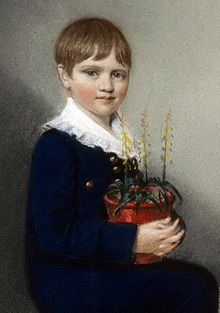

Detinjstvo i obrazovanje
Darvin je rođen u mestu Šruzberi, u grofoviji Šropšir, 12. februara 1809. godine kao peto dete dobrostojeće engleske porodice. Njegov pradeda sa majčine strane je bio uspešni trgovac porcelanskom i lončarskom robom Džosaja Vedžvud, a pradeda s očeve strane bio je poznati psiholog i naučnik iz 18. veka Erazmus Darvin.
Godine 1825, nakon završetka školovanja u elitnoj školi u rodnom Šruzberiju, mladi Darvin je upisao medicinu na univerzitetu u Edinburgu. Godine 1827. izbačen je sa studija medicine i upisao se na univerzitet u Kembridžu sa namerom da postane sveštenik anglikanske crkve. Tamo je sreo geologa Adama Sedžvika i prirodnjaka Džona Hensloua. Henslou ne samo da je pomogao Darvinu u sticanju samopouzdanja nego je svog učenika podučio kako da bude pažljiv i savestan posmatrač prirodnih pojava i sakupljač primeraka živog sveta.
Nakon završenih studija u Kembridžu 1831. Darvin se u svojoj dvadeset i drugoj godini, na Henslouov nagovor, ukrcao na istraživački brod „Bigl“, pridruživši se tako ekipi prirodnjaka na naučnom putovanju po svetu. Darvin je na tom putovanju dobio priliku da posmatra geološke formacije koje su pronađene na različitim kontinentima i ostrvima kao i velik broj fosila i živih organizama. U svojim geološkim posmatranjima Darvin je bio najviše zadivljen posledicama delovanja prirodnih sila na Zemljinu površinu. U to doba većina geologa zastupala je teoriju da su pojedine vrste životinjskog i biljnog sveta nastajale nezavisno jedna od druge, te da je svaka prošla kreacija uništena iznenadnom katastrofom, kao što je npr. zemljotres ili pucanje i uvijanje Zemljine kore. Prema toj teoriji poslednja katastrofa bila je ona povezana sa Nojevom barkom koja je izbrisala sve životne oblike osim onih koji su se ukrcali u barku. Ostali primerci životnih oblika postali su fosili. Prema tom gledištu, vrste, nastale nezavisno jedna od druge, nisu mutirale tako da su zauvek ostajale na istom stepenu razvoja.
Naučni rad
Katastrofičnu tezu (ali ne i teoriju o nemutaciji vrsta) izmenio je engleski geolog ser Čarls Lajel u svojoj knjizi u dva sveska „Principi geologije“ (engl. Principles of Geology) (1830 — 1833). Lajel je utvrdio da Zemljina površina prolazi kroz stalne promene što je rezultat delovanja prirodnih sila kroz duži vremenski period. Dok je boravio na „Biglu“ Darvin je zaključio da mnoga Lajelova zapažanja odgovaraju onome što je sam uočio. Takođe je primetio da neki njegovi nalazi nisu u skladu s Lajelovim hipotezama. Tako je, na primer, zapazio da na ostrvu Galapagos postoje jedinstvene vrsta kornjača, američkog drozda i zeba koje su, uprkos tome što su blisko povezane sa kornjačama, drozdovima i zebama sa evropskog kontinenta, različite u strukturi i prehrambenim navikama. Ta opažanja naterala su Darvina da postavi pitanje da li je moguće da postoje veze između različitih ali sličnih vrsta.
Nakon što se 1836. vratio u Englesku, svoje ideje o promenljivosti vrsta objavio je u delu „Beleške o transmutaciji vrsta“ (engl. Notebooks on the Transmutation of Species). Darvin se u svom stanovištu o razvijanju organizama još više učvrstio nakon što je pročitao „Esej o principima stanovništva“ (engl. An Essay on the Principle of Population) iz 1798. godine, delo britanskog ekonomiste Tomasa Roberta Maltusa. U tom delu Maltus objašnjava kako broj stanovnika sveta raste brže nego što raste proizvodnja hrane (broj stanovnika raste geometrijskom progresijom, a proizvodnja hrane aritmetičkom). Čovek nije u stanju da uravnoteži navedene pojave pa to, umesto njega, čine prirodne katastrofe, glad, bolesti i ratovi. Darvin je Maltusovu teoriju primenio na životinje i biljke i 1838. godine načinio nacrt teorije evolucije putem prirodne selekcije.
Darvin je sledećih dvadeset godina dorađivao svoju teoriju i usput se bavio i nekim drugim prirodno-istorijskim projektima; budući da je bio prilično bogat, nikad nije imao potrebu za dodatnim radom. Godine 1839. oženio se svojom rođakom Emom Vedžvud, a nešto kasnije se preselio na malo imanje Daun Haus pokraj Londona. Tamo je sa suprugom podizao desetoro dece, od koje je troje umrlo u ranom detinjstvu. Darvin je svoju teoriju prvi put objavio 1858. godine u jednom časopisu, istovremeno kad je to učinio i Alfred Rasel Volas, mladi prirodnjak koji je nezavisno od Darvina došao do istog zaključka. Darvinova teorija je u celosti objavljena 1859. godine pod naslovom „O poreklu vrsta“ (engl. On the Origin of Species). Nazvana „knjigom koja je šokirala svet“, knjiga je rasprodata već prvog dana te je naknadno štampano još šest izdanja.
Reakcija na Darvinovu knjigu bila je veoma brza. Neki biolozi prigovarali su Darvinu da ne može dokazati svoje hipoteze. Drugi su kritikovali Darvinovu koncepciju o razvijanju različitih vrsta iz jedne. Međutim, nisu naučnici bili najžešći kritičari Darvinove teorije nego Crkva. Crkveni predstavnici su Darvinu oštro prigovarali da teorija o prirodnoj selekciji poriče uticaj Boga na stvaranje čoveka i stavlja čoveka na isti nivo sa životinjama.
Ostatak života Darvin je proveo dorađujući teoriju tako da je kasnije objavio još nekoliko knjiga u kojima je objašnjavao sporne delove teorije: „Menjanje životinja i biljaka u domaćim uslovima“ (1868; engl. The Variation of Animals and Plants Under Domestication), „Poreklo čoveka“ (1871; engl. The Descent of Man), „Ispoljavanje emocija kod životinja i čoveka“ (1872; engl. The Expression of the Emotions in Animals and Man) i „Poreklo čoveka i selekcija u vezi sa polom“ (1872; engl. The Descent of Man and Selection in Relation to Sex). Važnost Darvinovog rada prepoznali su njegovi savremenici te je Darvin primljen u Kraljevsko društvo 1839. godine i u Francusku akademiju nauka (1878). Odata mu je počast i sahranom u Vestminsterskoj opatiji, nakon što je 19. aprila 1882. preminuo u mestu Daun, u grofoviji Kent.
Najvažnija dela su:
- 1839: Journal and Remarks (Dnevnik i napomene); zbog popularnosti, tekst je iste godine ponovo štampan pod naslovom Journal of Researches into the Geology and Natural History (Dnevnik istraživanja o geologiji i prirodnoj istoriji).
- Drugo prerađeno izdanje iz 1845. takođe koristi ovaj novi naslov samo što su ’geologija’ i ’prirodna istorija’ zamenili mesta, dok na rikni knjige piše Naturalist's Voyage (Putovanje prirodnjaka). Treće izdanje sa finalnom verzijom teksta iz 1860. nosi isti naslov, a na rikni knjige stoji Naturalist's Voyage Round the World (Putovanje prirodnjaka oko sveta). Izdanje iz 1905. prvi put koristi naslov The Voyage of the Beagle (Putovanje Bigla).
- 1842: The Structure and Distribution of Coral Reefs (Struktura i distribucija koralnih grebena) – Darvinova prva monografija.
- 1844: Geological Observations on the Volcanic Islands (Geološka zapažanja na vulkanskim ostrvima).
- 1846: Geological Observations on South America (Geološka opažanja o južnoj Americi).
- 1859: On the Origin of Species by Means of Natural Selection, or the Preservation of Favoured Races in the Struggle for Life (Postanak vrsta pomoću prirodnog odabiranja ili Održavanje povlađivanih rasa u borbi za život).
- 1868: The Variation of Animals and Plants under Domestication (Varijacije životinja i biljaka usled pripitomljavanja).
- 1871: The Descent of Man, and Selection in Relation to Sex (Čovekovo poreklo i spolno odabiranje).
- 1872: The Expression of the Emotions in Man and Animals (Izražavanje emocija kod čoveka i životinja).